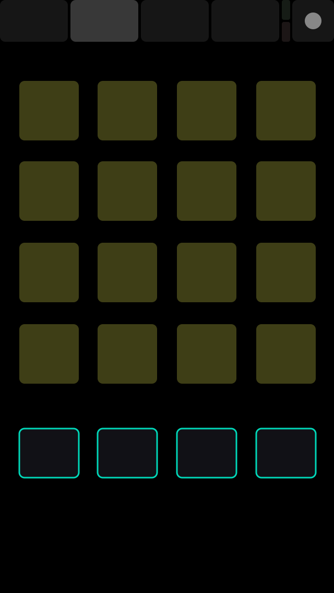

Internet of Things: Week 9
Internet of Things: Week 9
Internet of Things: Week 9
Internet of Things: Week 9
Grab the code here:
http://bit.ly/2hTs6g8
- Graphing sensor data in real time
- Connecting with P5.js
- Building out your web interface
- Connecting with OSC
Topics for This Week:
Graphing Data
Connect a Joystick

A joystick is 2 pots and 1 switch
Connections
GND -> GND
5V -> 5V
Vrx -> A1
Vry -> A0
SW -> 2
Upload joystick with Arduino
For review lets walk through the Arduino program
We will use the smoothiecharts library to plot the joystick data
Open 'serial_ws_joystick_chart' in your text editor. On line 8 of index.js set the serial port to your serial port
cd 'serial_ws_joystick_chart' && npm install && node app.js && localhost:3000 in the browser
Use the builder to style the chart
Connect the chart to your own sensor
Lets build out you Iot web interface
cd 'joystick_p5js' && npm install && node app.js && localhost:3000 in the browser
Let's Combine Express, Websockets and OSC

Set your phone and laptop to wifi 'BOTT'
Password 'iotpassword'
Open your system preferences, the click the network icon


Choose the simple layout in TouchOSC app
CD OSC in the code folder
run 'node app.js
Choose a layout
And program to talk to your page
Now try osc_fancy
run 'node app.js
Now try osc_sound
run 'node app.js
Now try osc_p5js
run 'node app.js
FaceOSC